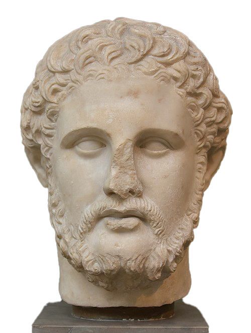

Metoda "Divide et Empera"
de Slutu Stanislav


de Slutu Stanislav

Concept: Este o tehnică de programare bazată pe descompunerea unei probleme complexe în subprobleme mai simple, rezolvarea acestora și combinarea rezultatelor. Cei 3 pași principali: Divide (Împarte): Problema inițială este împărțită în două sau mai multe subprobleme din același pachet (de același tip). Impera (Stăpânește / Rezolvă): Se rezolvă recursiv subproblemele. Dacă s-a ajuns la o dimensiune destul de mică (cazul de bază), se rezolvă direct. Combină: Se unesc soluțiile subproblemelor pentru a obține rezultatul final al problemei mari.
int cautareBinara(int arr[], int stanga, int dreapta, int x) {
if (dreapta >= stanga) {
int mijloc = stanga + (dreapta - stanga) / 2;
// Elementul a fost găsit la mijloc
if (arr[mijloc] == x) return mijloc;
// Dacă elementul este mai mic, căutăm în stânga
if (arr[mijloc] > x)
return cautareBinara(arr, stanga, mijloc - 1, x);
// Altfel, căutăm în dreapta
return cautareBinara(arr, mijloc + 1, dreapta, x);
}
return -1; // Elementul nu există
}
Algoritmul Merge Sort (Sortare prin interclasare): Împarte vectorul în jumătăți, le sortează recursiv și apoi le interclasează ordonat. Algoritmul Quick Sort (Sortare rapidă): Alege un pivot și împarte vectorul în funcție de elementele mai mici sau mai mari decât el. Turnurile din Hanoi: Rezolvarea jocului prin mutarea recursivă a sub-turnurilor de discuri.
✔ Avantaje:
✖ Dezavantaje: